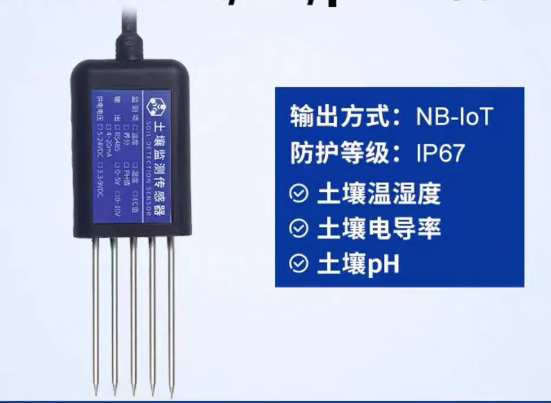
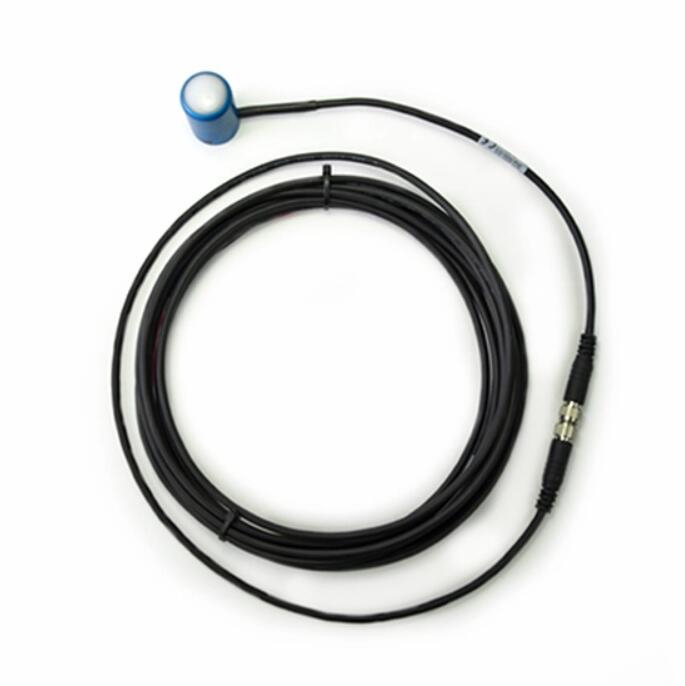

BBST
BSST Team | ZWU
2024.6
1.Class Practice
(AUTODESK FUSION & SHAPR 3D)

Course → loT
Analysis of a certain case of LOT——
John Deere's Precision Agriculture Solution
1.Background
2.Implementation plan
3.Advantage analysis
4.Challenges and solutions
5.Summary
Ⅰ.Sensors and devices
Ⅱ.Data collection and transmission
Ⅲ.Data collection and transmission
Ⅳ.Automation Control and Implementation
Soil moisture sensor：
【淘宝】https://m.tb.cn/h.gg8caFiT2Es7zSq?tk=ZkMkWA5igkI CZ0000
【淘宝】https://m.tb.cn/h.gTQoFqO5SEWXOn8?tk=eAaiWA5jx8P HU0854
【淘宝】https://m.tb.cn/h.gT91Qk6ylCC97yP?tk=BO92WA5Dsub CZ3460 「Vantage
Pro2无线气象站6152校园农业自动天气预报气象站DAVIS」
https://www.dji.com/cn/p4-multispectral
https://ml.mbd.baidu.com/r/1lrixgGSize?f=cp&rs=930797787&ruk=nkomwqMWdZ5oHqM2DexJvg&u=3aa0de49be74f658

相关产品：https://www.instrument.com.cn/netshow/C103628.htm
Detailed
introduction：https://www.mouser.cn/new/sensirion/sensirion-sht3xa-automotive-sensors/
Detailed introduction：https://www.qudao.com.cn/article/636.html
- Function: Measure the moisture content in soil.
- Application: Helps determine when and how much irrigation to avoid excessive or insufficient irrigation.
- Example device: Decagon Devices EC-5 soil moisture sensor.
Temperature and humidity sensors:
- Function: Measure ambient temperature and humidity.
- Application: Monitor and control greenhouse environment, optimize crop growth conditions.
- Example device: Sensirion SHT3x temperature and humidity sensor.
Meteorological station:
- Function: Collect meteorological data such as wind speed, rainfall, and air pressure.
- Application: Provide comprehensive meteorological data for precise agricultural decision-making.
- Example device: Davis Vantage Pro2 weather station.
Unmanned Aerial Vehicles (UAVs):
- Function: Aerial monitoring of farmland, obtaining high-resolution farmland images.
- Application: Evaluate crop health, detect pests and diseases, and generate crop health maps.
- Example device: DJI Phantom 4 Multispectral drone.
Automated irrigation system:
- Function: Automatically control irrigation based on sensor data.
- Application: Provides precise irrigation to reduce water resource waste.
- Example device: Toro Precision Soil Sensor irrigation system.
LoRaWAN and NB IoT networks:
- Function: Low power wide area network for long-distance transmission of sensor data.
- Application: Realize remote farmland data transmission, even in areas with poor network coverage.
John Deere Operations Center：
- Function: A platform for centralized management and analysis of farmland data.
- Application: Provide data visualization, analysis tools, and decision support to help farmers optimize planting strategies.
- Technology: Based on cloud computing and big data analysis technology, it supports real-time data processing and historical data analysis.
Automated agricultural machinery:
- Function: Automatically perform agricultural operations such as sowing, fertilizing, and harvesting through GPS and sensor technology.
- Application: Improve homework efficiency and reduce manual operations.
- Example device: John Deere AutoTrac auto drive system.
Improve production efficiency:
- By precise irrigation and fertilization, crops are ensured to achieve optimal growth conditions, significantly increasing crop yield.
Optimize resource utilization:
- Precision agriculture reduces the waste of water, fertilizers, and pesticides, achieving sustainable agricultural development.
Real time decision support:
- A decision support system based on real-time data helps farmers respond to changing agricultural environments in a timely manner.
Improving crop quality:
- By optimizing management, the health and quality of crops have been improved, and market competitiveness has been increased.
Initial investment high:
- Although the initial investment is relatively high, long-term efficiency improvements and cost savings can offset the initial costs.
Technology dependency:
- Provide training and technical support to farmers to ensure they can effectively use and maintain the system.
Data security:
- Adopting advanced encryption and data protection technologies to ensure the security and privacy of agricultural data.
Network coverage issue:
- Utilize low-power wide area network technologies such as LoRaWAN and NB IoT to ensure reliable data transmission even in remote areas.
Machine learning algorithms:
- Function: Analyze complex data patterns, predict crop growth trends and pest and disease risks.
- Application: Provide precise agricultural advice to improve production efficiency and crop quality.
Light sensor:
- Function: Measure the amount of solar radiation.
- Application: Determine the optimal planting time and plant photosynthesis requirements.
- Example device: Apogee Instruments SQ-500 optical quantum sensor.